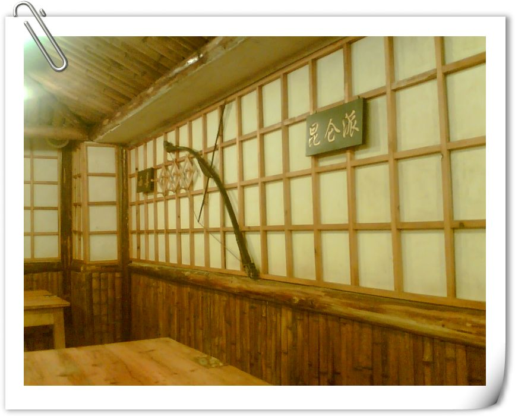

我们相信 有人就有江湖,有江湖就有风波庄。
什么是江湖？人即是江湖。
什么是江湖？恩怨即是江湖。
寥落了情感，慕容嫣独孤求败。
欧阳锋醉生梦死，觅不到归路。
那一方泼墨山水中写满了悲喜交加的故事。
情与义在推来送去的鼓掌间荡涤。
生在尘世，心在武林。
寻一寸方圆，道出豪气掩藏下的细腻情感，摆一桌酒食，会八方武林兄弟。
在店外，远远就能看见“风波庄”的招牌，以及“人在江湖，身不由己”的对联，竹楼式的特色装修。
走进店内，庄主会喊道“小二，有客到了。”，小二们会齐声喊道“幸会幸会，里面请！”
在充满武林雄风的风波庄，展现在眼前的是一把把屠龙刀，一幅幅侠客画，一张张八仙桌，一个个缺口碗，每一个角落里都充满武侠豪情.